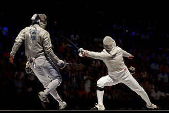

Фехтува́ння
Фехтува́ння (від нім. Fechten) — спортивне єдиноборство.
Був поширений давніше переважно аристократами і військовою елітою. Входить у програму олімпійських ігор. Серед радянських чемпіонів багато українців: Т. Самусенко, В. Жданович, Я. Рильський, С. Косенко та ін. В Україні вправляються у фехтуванні понад 10 000 спортсменів. У 2004 році на Олімпіаді в Сіднеї Владислав Третяк завоював бронзову медаль у індивідуальних змаганнях шаблістів. У 2008 році золоті медалі на Олімпіаді в Пекіні здобула жіноча команда зі шаблі. До складу команду входили Ольга Жовнір, Ольга Харлан, Олена Хомрова та Галина Пундик[3]. 2012 року Яна Шемякіна здобула золоту медаль в шпазі, а Ольга Харлан — бронзову у змаганнях з шаблі.